统筹研究范围
AI 产业生态、三区两翼、全球案例与品牌叙事。
- 创新链与人才链
- 未来城市形态
以三核 + 京张慢行脊 + 10 场景节点组织总体设计：众智园、AI原点、大钟寺三处创新锚点，沿遗址公园慢行脊布置可运营 AI 场景，蓝绿公共空间与道路网络形成日常复合环。
编制日期 2026-08-28 · 边界为临时工作范围，正式红线发布后须复核重算
三核锚点 · 京张慢行脊 · 10 个 AI 场景节点 · 蓝绿慢行复合环。
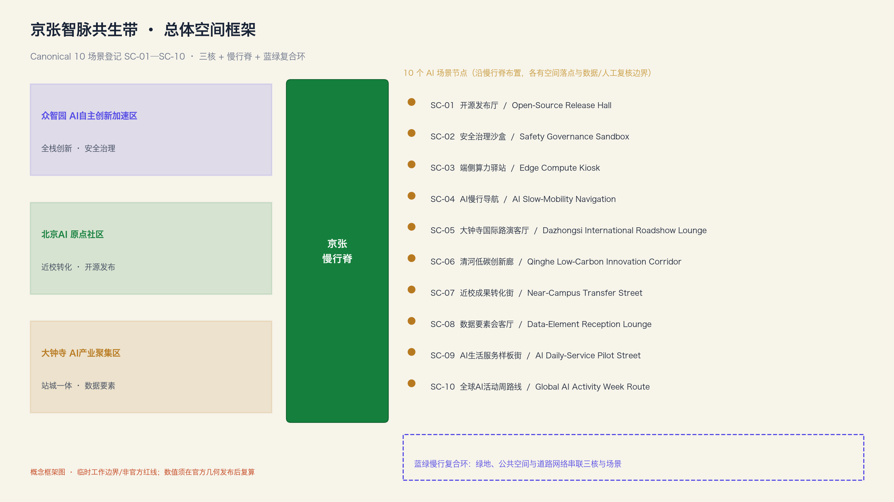
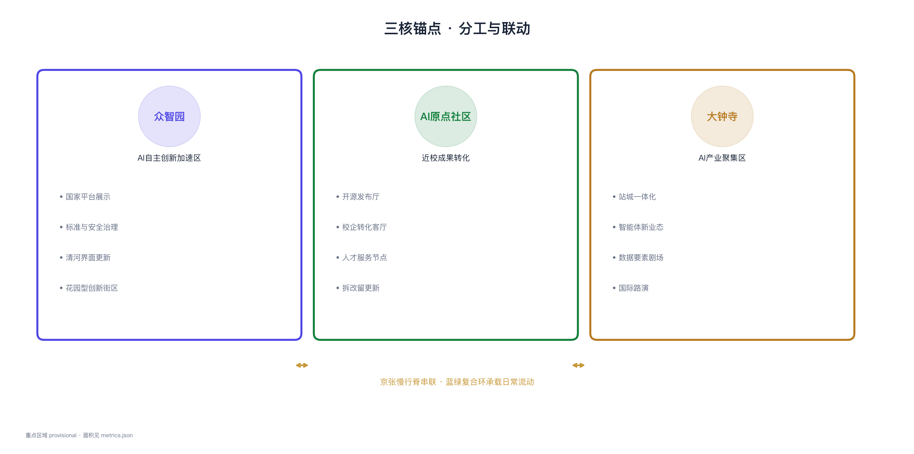
总体设计范围内的用地、交通、蓝绿与重点区空间结构总览。
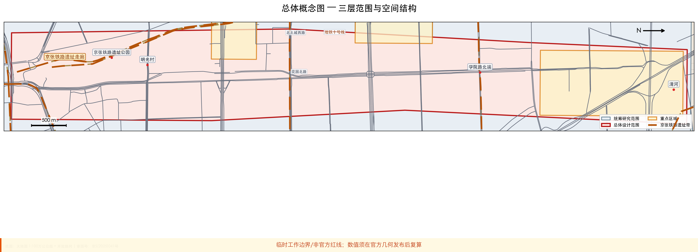
京张 AI 创新带在海淀走廊中的位置，三核①②③与主要道路、轨道关系。
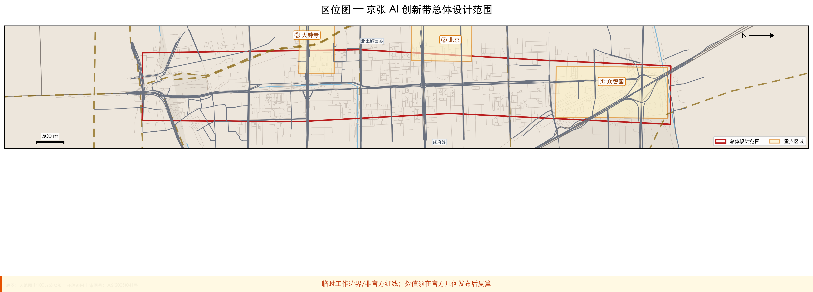
统筹研究 43.6 km² → 总体设计 11.4 km² → 重点区域 3 片详细设计。
AI 产业生态、三区两翼、全球案例与品牌叙事。
城市更新、用地结构、交通市政、京张遗址公园活力带。
三处片区达到详细设计深度，面积可复算。
三处详细设计片区的产业定位与空间策略。
花园型全栈自主创新街区：清河界面、产业展示、安全治理沙盒与低碳交往空间。
近校型成果转化街区：开源社区、成果发布、人才服务与拆改留策略。
城市型智能经济街区：大钟寺站一体化、四象限步行连通与智能体新业态。
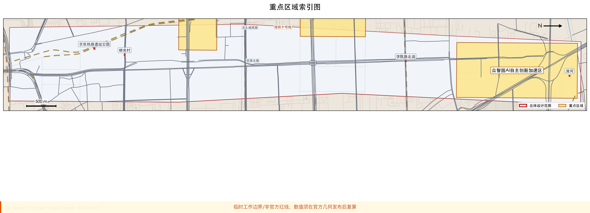
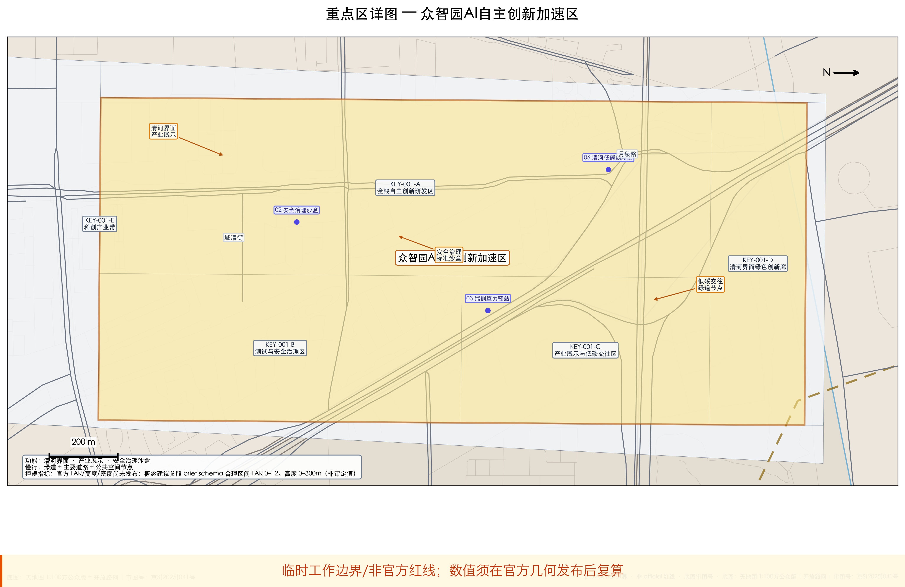
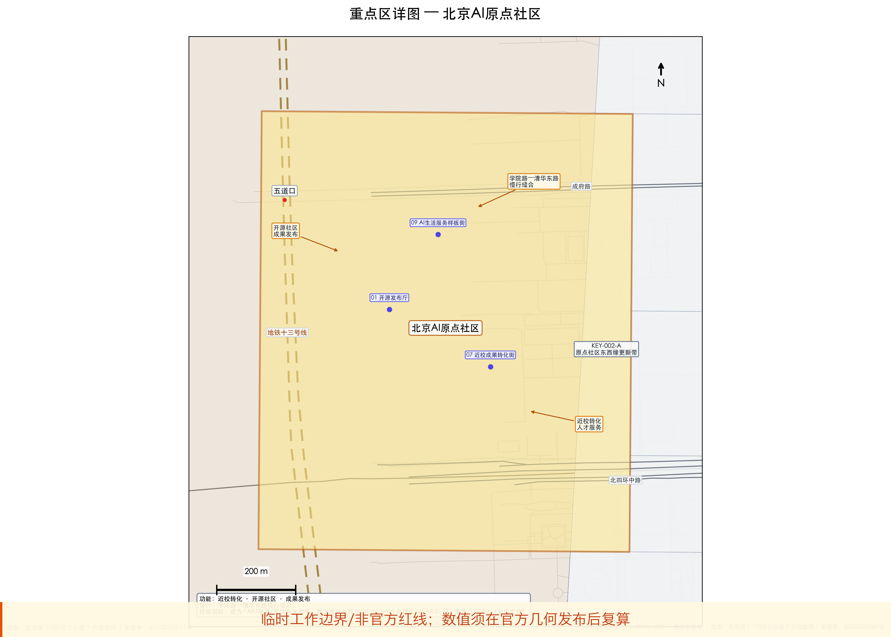
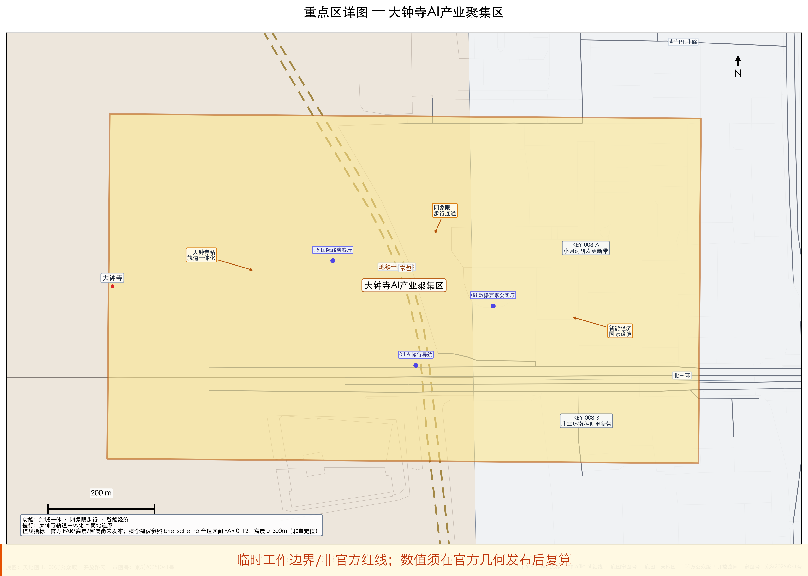
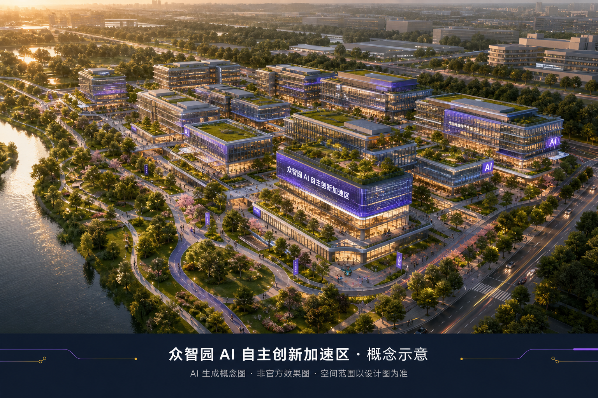
19 个用地分区与总体空间结构。
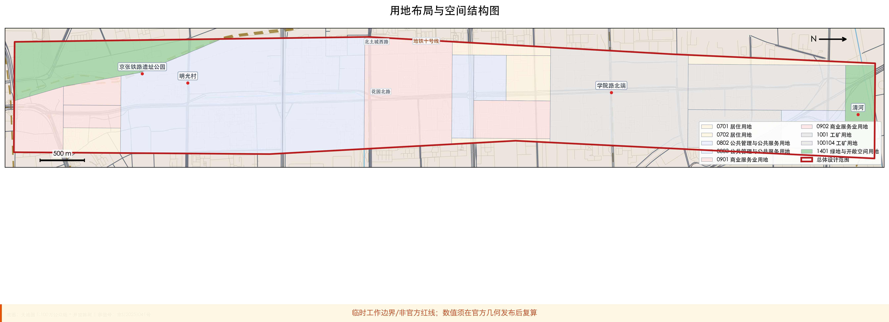
道路网络与蓝绿公共空间复合系统。
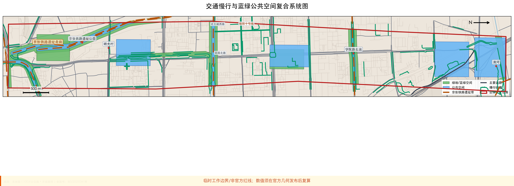
建筑体量与高度属性，支撑更新规模与指标复核。
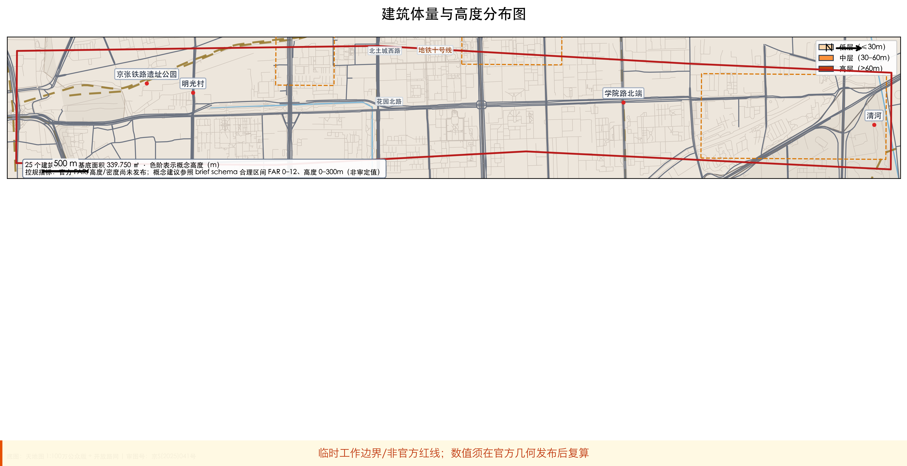
与北纬社区、未来科学城、怀柔科学城、经开区及京津冀的创新协同；Logo 与英文命名层级。
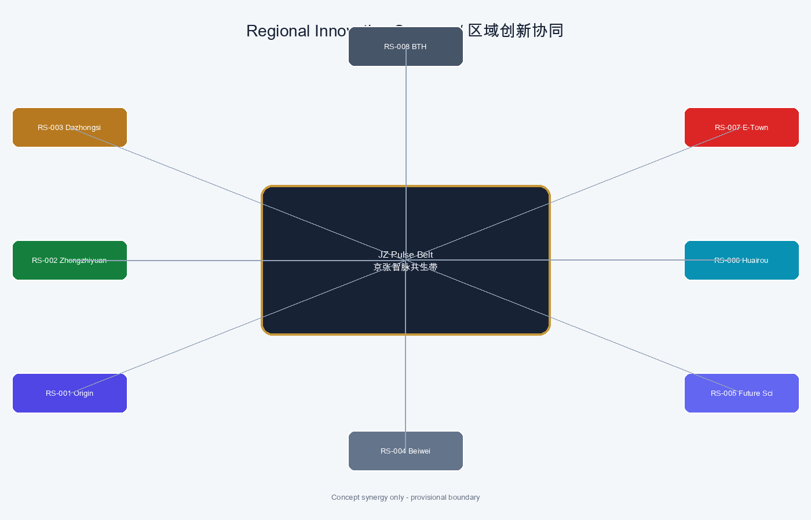
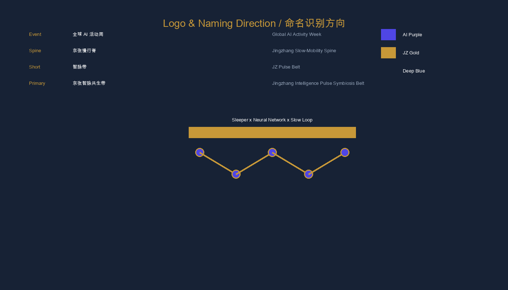
English tagline: From Rails to Intelligence: Where Heritage Meets AI Innovation. Provisional geometry only; no official redline or statutory control claims. Canonical key area 369.268 ha vs announcement ~368.4 ha.
六项更新项目清单与分期实施安排。
canonical 登记 SC-01—SC-10：中英名称、服务对象、feature_id、数据边界、人工复核、运营主体与分期，与 proposal / compliance_matrix / A3·A0 同一口径。
原点社区成果发布、代码贡献展示与小型路演。
众智园标准制定、可信评测与安全治理展示。
总体设计节点：端侧推理与公服融合原型。
遗址公园慢行断点识别与可解释导视。
智能体、终端与内容消费的展示洽谈发布。
众智园临清河界面：绿廊、雨洪与步行复合。
原点社区孵化、展示、法务与投融资服务。
大钟寺片区数据要素流通的城市服务界面。
医疗、教育、法律与生活服务落到可运营街区。
串联遗址、开源、产业展示与国际路演的步行路线。
慢行连通、蓝绿海绵与京张遗址视廊的概念级摘要（正式条件发布后须深化）。
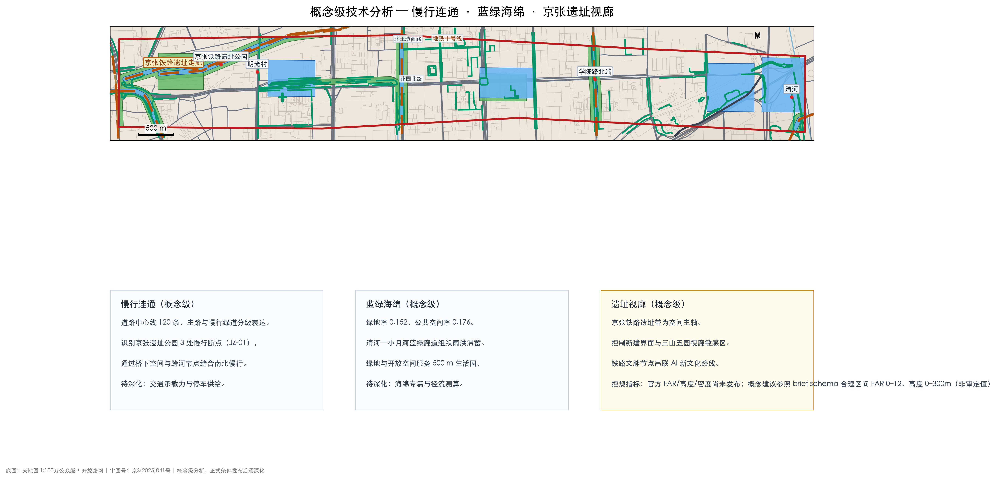
规划指标复算摘要。
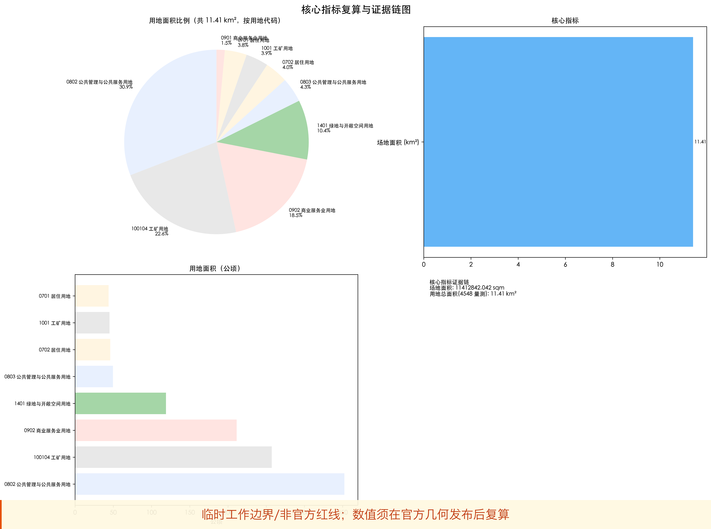
公告任务与设计专项在文本、图层、图面中的响应摘要。
统筹研究、总体设计、三处重点区、10 个 AI 场景、6 项更新项目与核心指标均已落位至方案文本与图面。
包内结构、边界与证据链自检摘要。
已完成 5/5 项自检，边界与图层结构可进入 intake 讨论。
资料来源与待确认的设计边界。
资格预审公告、智能体任务书、公开资料、天地图底图（审图号京S(2025)041号）与方案空间数据。